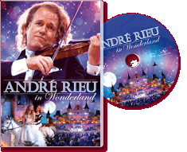

|
André Rieu In Wonderland (2007) - 150
Minutes
|
 |
|
To the music of Thus spake Zarathustra the gates
open to reveal an enchanting, fairy-tale world. There are
stunning melodies, recorded at Efteling, one of the world’s most
beautiful fairy-tale theme parks, and performed by André Rieu,
his orchestra and choir and some fantastic soloists. It is a
fascinating, magical film, exciting and amusing from beginning
to end. This fabulous, fairy-tale DVD has contributions from
Suzan Erens, Carmen Monarcha, Carla Maffioletti, Mirusia
Louwerse, Brian Dickerson, the Platinum Tenors, soloists from
the Ballet of the Vienna State Opera, the International Dance
Theatre, and the Berlin Folk-Music Sparrows. It’s a unique DVD
with an enchanting atmosphere and wonderful, fairy-tale
melodies, performed by top soloists. Enjoy the most beautiful
fairy-tale music including Swan Lake, Hansel and Gretel,
Solveig’s Song, the Sabre Dance, the Old Castle, Cinderella, the
Magic Flute, and all the wonderful fairy-tale characters. Come
away with us to the land of fairies, elves and a
thousand-and-one nights, and live happily ever after… |
Where to buy?
|
|
DVD Tracklist
- Also sprach Zarathustra
- Heigh-Ho
- Florentiner Marsch
- Medley (Veleta / Tulpen aus Amsterdam / Holzschuhtanz / Schneewalzer)
- Salomé
- Sabeltanz
- Arie des Zauberers
- O Isis und Osiris
- I've got plenty of nothing
- Concerto pour une voix
- Solveigs Lied
- Lasst den Kopf nicht Hängen
- The Impossible Dream
- Cinderella Waltz
- Tara's Theme
- Second Waltz
- Schwanensee 2. Akt Moderato
- Carnaval Festival
- Brüderchen komm tanz mit mir
- Abends will ich schlafen geh'n
- Some Day My Prince Will Come
- Fanfare
- Das alte Schloss
- Im Salon zur blauen Pagode
- Somewhere Over The Rainbow
- This Land Is Mine
- What A Wonderful World
|
|